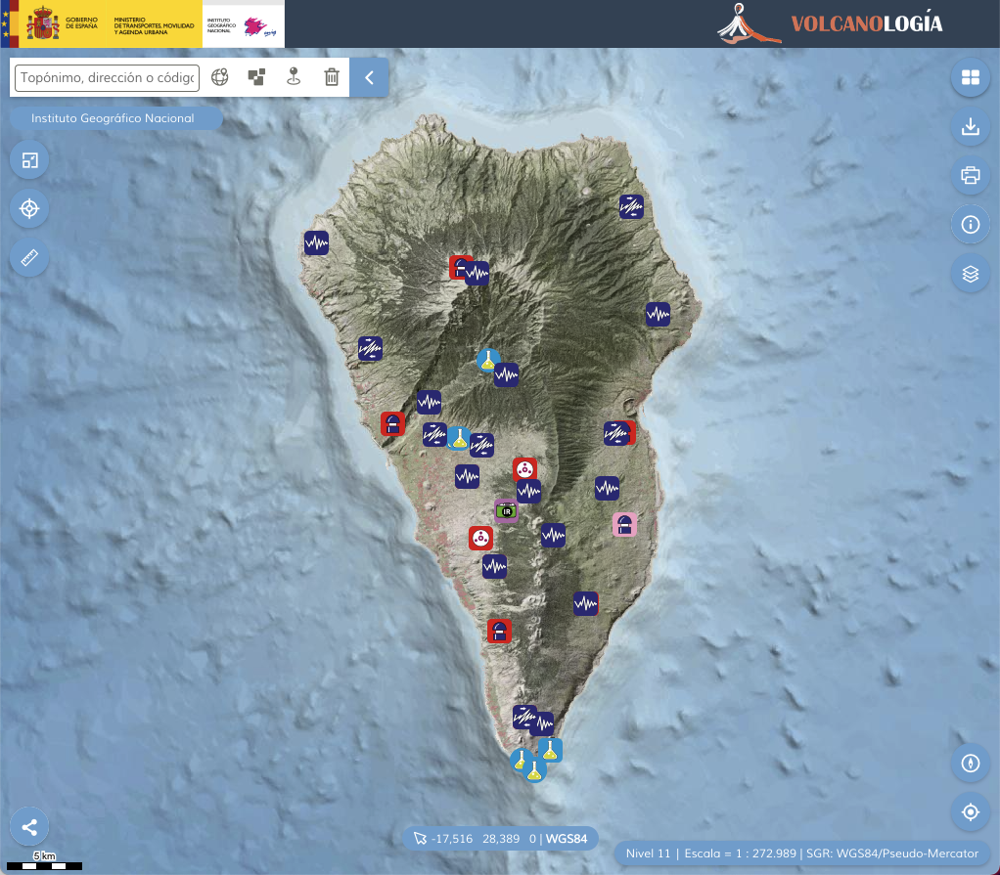

Seismic Monitoring Stations
Monitoring La Palma
The Instituto Geográphico Nacional of Spain maintains a listing of the monitoring equipment and resources installed on the Canary Islands, including the island of La Palma. The equipment is installed and operated by the various cooperating governmental organizations and IGN.
The monitoring stations measure position, seismic activity, chemistry/gas, deformation, and inclination. The network of seismic monitoring stations marked by the wave icon (dark blue) in Figure 1 below is of particular interest to this study.

Seismic Monitoring Stations
The active seismic monitoring stations have been installed over the period 2009 to 2021. As of Aug 5, 2022 there are 12 active stations (Table 1) and 4 decommissioned stations (Table 2).
| Id | Installed | Upgraded | Location | Channels | Links |
|---|---|---|---|---|---|
| EHIG | 13/03/2009 | Tigalate, Villa de Mazo | HH | link | |
| TBT | 27/10/2012 | Barranco de las Angustias, El Paso | HH | link | |
| CJED | 24/05/2017 | Jedey, El Paso | HH | link | |
| CPUN | 24/05/2017 | 23/06/2017 | Los Aviseros, Puntallana | HH | link |
| CTEN | 25/05/2017 | Las Machuqueras, Fuencaliente | HH | link | |
| CROM | 10/10/2017 | 14/08/2019 | Observatorio del Roque de los Muchachos, Garafía | HH | link |
| CENR | 10/10/2017 | Cumbre Vieja, El Paso | HH | link | |
| CGOR | 17/11/2017 | Helipuerto BRIF, Puntagorda | HH | link | |
| CMIR | 08/11/2017 | 20/03/2019 | P.N. La Caldera de Tabueriente, El Paso | HH | link |
| CBRE | 03/04/2018 | Breña Baja | HH | link | |
| CALD | 08/04/2021 | Villa de Mazo | HH | link | |
| CAVE | 29/09/2021 | Tajuya | HH | link |
A number of stations have been upgraded since commissioning, where EH (Extremely Short Period) sensors were replaced with HH (High Broad Band) sensors based on the change to the SEED channel identifiers reported.
The following decommissioned stations were previously part of the seismic network on the island and contributed to measurements over the period 2017 to 2021.
| Id | Installed | Decommissioned | Location | Channels | Links |
|---|---|---|---|---|---|
| CMAZ | 10/11/2017 | 17/01/2018 | Villa de Mazo, Isla de la Palma | HH | link |
| CLLA | 09/11/2017 | 13/01/2019 | Todoque, Los Llanos de Aridane | HH | [link](https://www.ign.es/web/ign/portal/vlc-estaciones-red/-/estaciones-canarias/sismologiaDetalleEstaciones?codT=BAJA&codEs=CLLA&mapa=N) |
| CFLP | 06/11/2017 | 20/03/2019 | Los Canarios, Fuencaliente | HH | [link](https://www.ign.es/web/ign/portal/vlc-estaciones-red/-/estaciones-canarias/sismologiaDetalleEstaciones?codT=BAJA&codEs=CFLP&mapa=N) |
| CVIE | 10/10/2017 | 08/04/2021 | Cumbre Vieja, Villa de Mazo | EH | [link](https://www.ign.es/web/ign/portal/vlc-estaciones-red/-/estaciones-canarias/sismologiaDetalleEstaciones?codT=BAJA&codEs=CVIE&mapa=N) |
For more information on the monitoring network in the Canary Islands visit https://www.ign.es/web/ign/portal/vlc-area-volcanologia